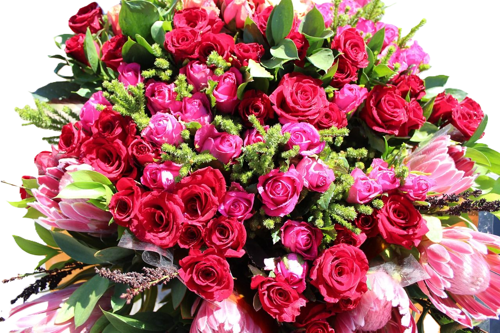
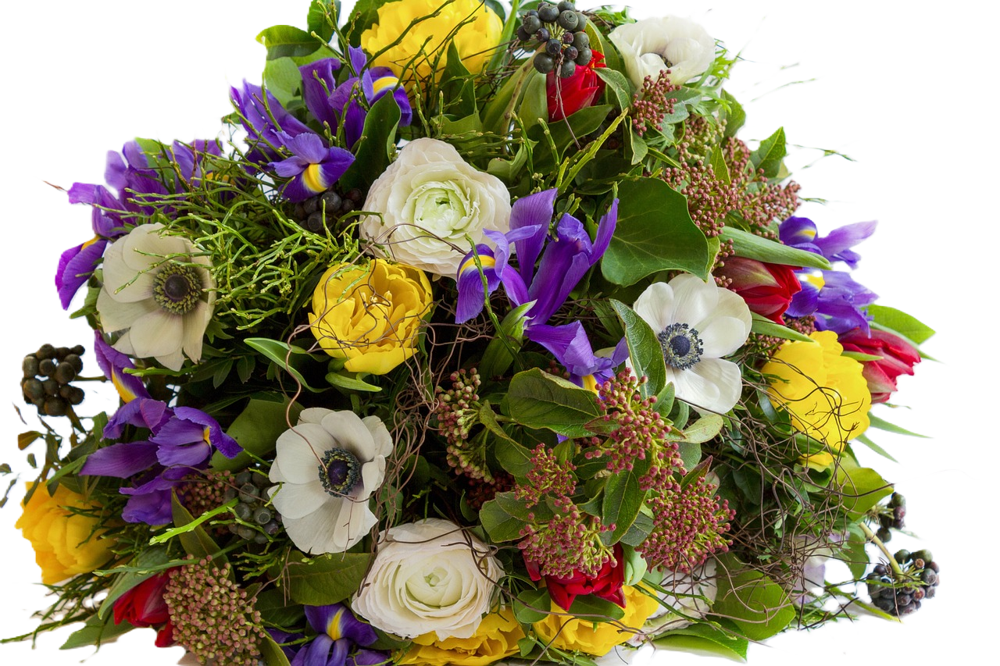
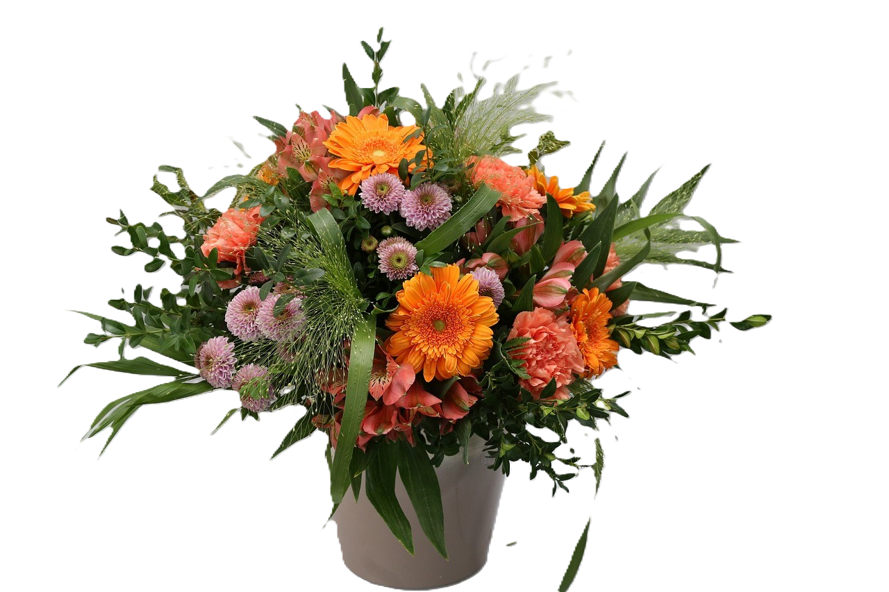
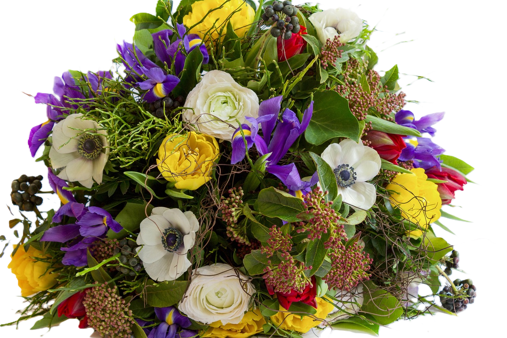
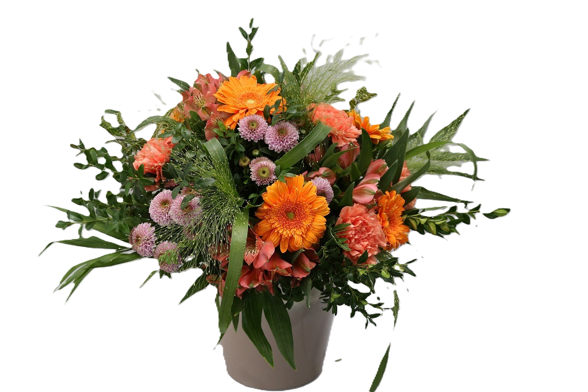
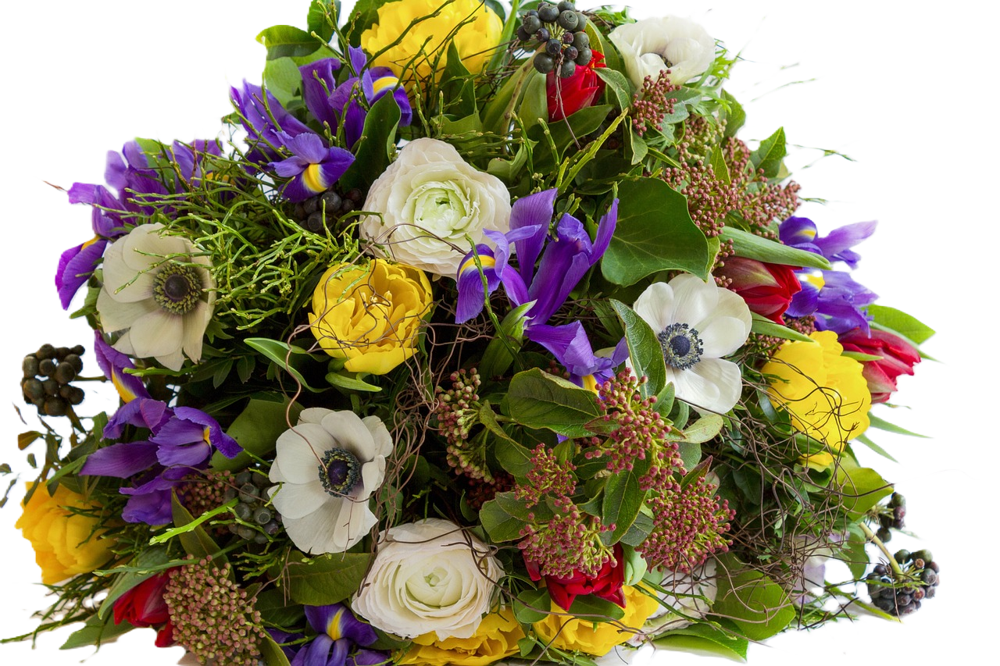
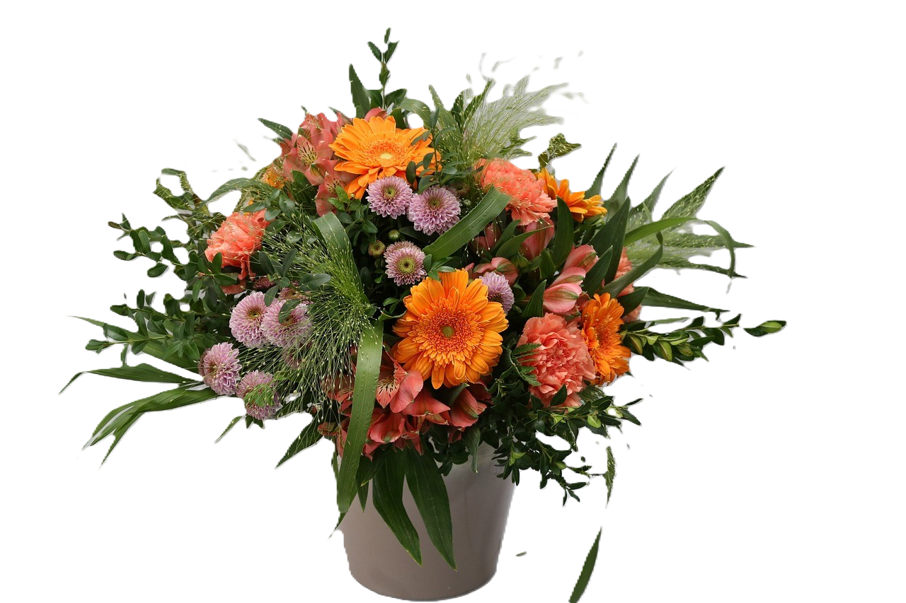
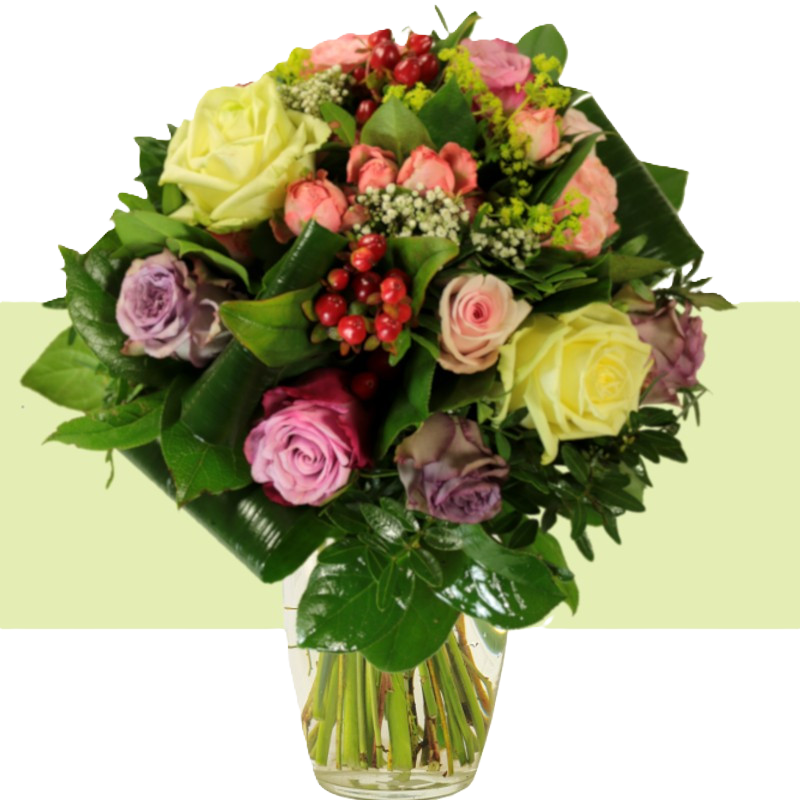
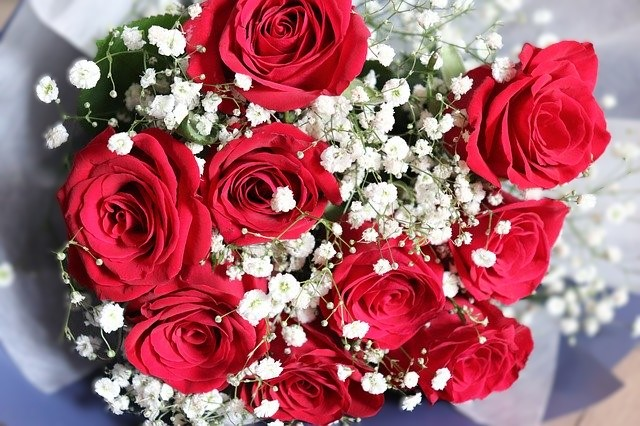

Bloom Petals
Chez BloomPetals, nous croyons que chaque célébration mérite d'être parée de la beauté naturelle des fleurs. Nous sommes une entreprise passionnée et créative spécialisée dans la confection de magnifiques bouquets floraux pour embellir vos événements spéciaux. Que ce soit un mariage, un anniversaire, une réception ou toute autre occasion festive, nos artisans floraux talentueux travaillent avec dévouement pour créer des arrangements uniques et époustouflants qui émerveilleront vos invités.

 





| Création de bouquets personnalisés | Décoration Florale d'Événements | Ateliers de Composition Florale |
| BloomPetals offre un service de création de bouquets floraux entièrement personnalisés pour toutes les occasions. Que ce soit pour un mariage élégant, un anniversaire chaleureux ou un événement d'entreprise sophistiqué, notre équipe d'artisans floraux talentueux travaille en étroite collaboration avec les clients. pour concevoir des arrangements sur mesure, adaptés à leurs goûts et à l'ambiance de l'événement. | Notre équipe de professionnels se spécialise dans la décoration florale d'événements. Nous transformons les lieux de fêtes en espaces enchanteurs en utilisant des fleurs fraîches et luxuriantes. Des centres de table élégants aux arches florales majestueuses, nous concevons des décors floraux qui éblouissent et captivent les invités. Notre service comprend également la livraison, l'installation et la décoration sur place pour garantir une expérience sans stress pour nos clients. | En plus de nos services de décoration et de création de bouquets, BloomPetals propose des ateliers de composition florale interactifs. Ces ateliers sont parfaits pour les amateurs de fleurs et les passionnés de design floral. Nos experts partagent leurs connaissances et leurs compétences, guidant les participants dans la création de leurs propres arrangements floraux. C'est une expérience enrichissante et ludique, idéale pour les événements d'entreprise, les enterrements de vie de jeune fille ou les fêtes privées. Les participants repartent avec leurs créations florales uniques et des souvenirs mémorables de l'atelier. |

